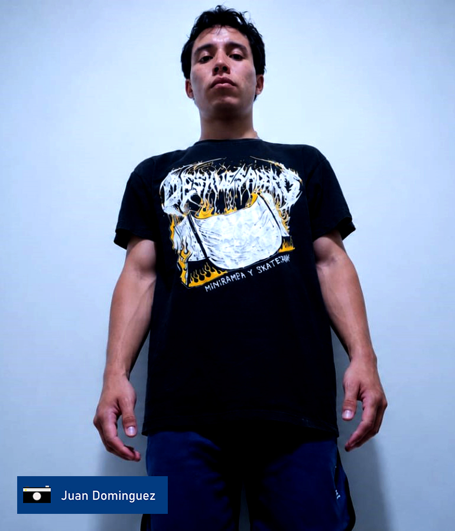
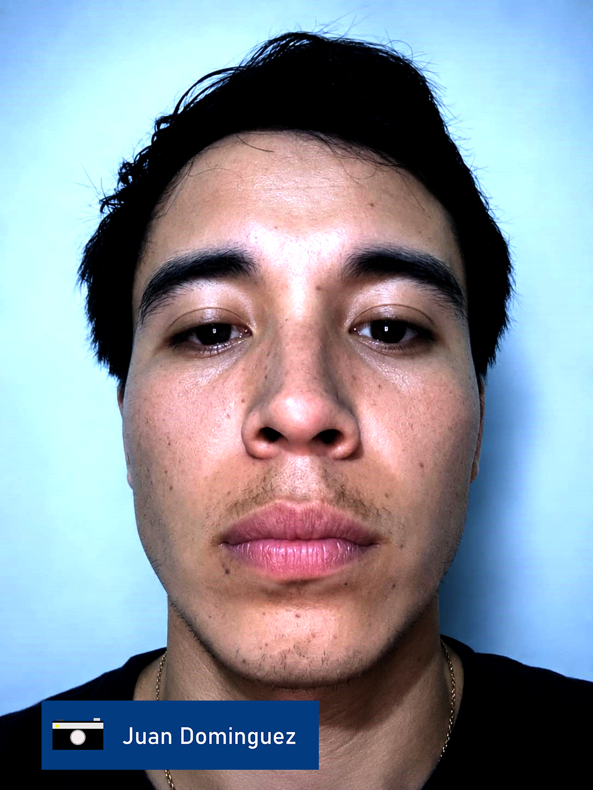
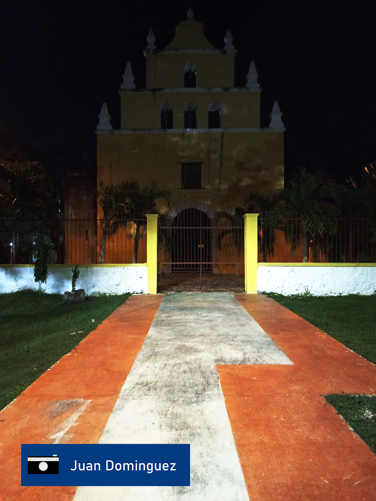
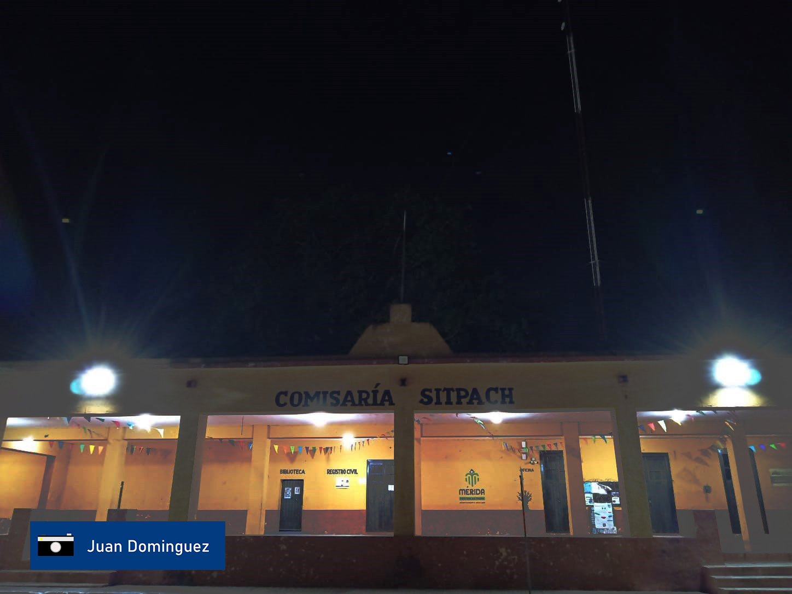
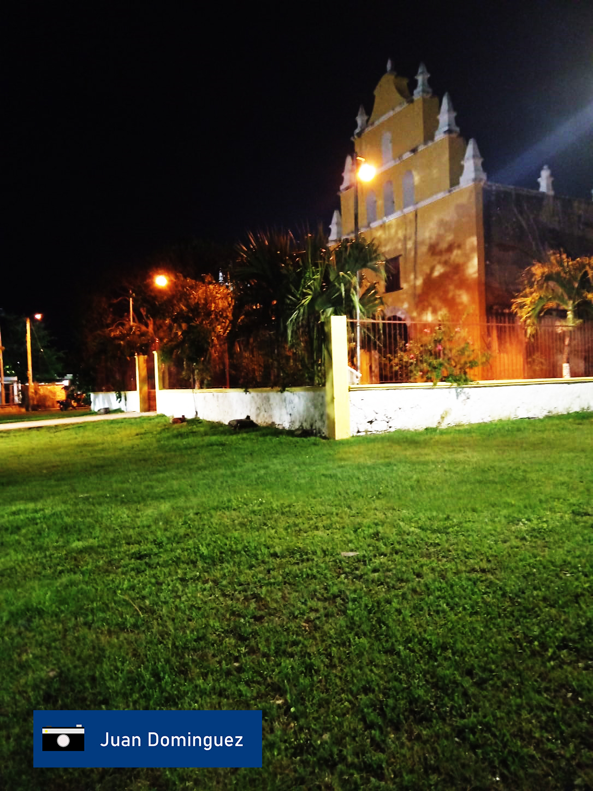
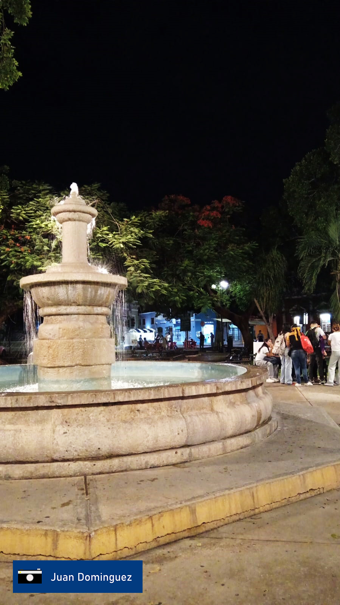

Inicio
hola, como estan. en esta encontraras fotografias con distintos angulos de camara y distintos tipos de luz y planos fotograficos estas fotografias fueron tomadas durante el cuatrimestre y retocadas en photoshop
Presentacion
Me llamo juan carlos, tengo 25 años, me gusta andar en bici, ver la naturaleza, escalar, andar en patineta, ver series, jugar videojuegos y salir a bailar
Galeria

Autoretrato
fotografia con fondo liso, plano americano, luz fria y angulo contrapicado.

Autoretrato 2
fotografia con fondo liso, primer plano, angulo frontal y luz fria.

Iglesia
fotografia con mas suelo que cielo, luz nocturna, vertical

Comisaria
Fotografia con mas cielo que suelo, luz nocturna, horizontal

Capilla
fotografia con mas suelo que cielo, luz nocturna, vertical

Fuente de Santiago
Fotografia con mas suelo que cielo, luz nocturna, vertical